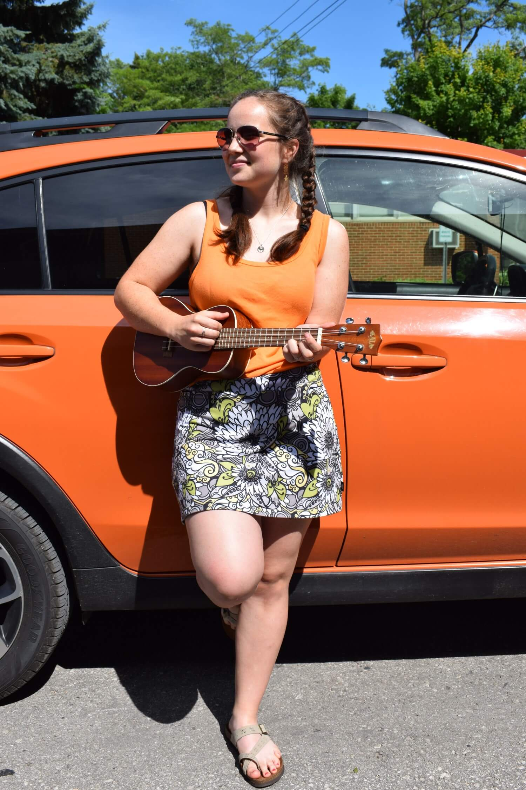
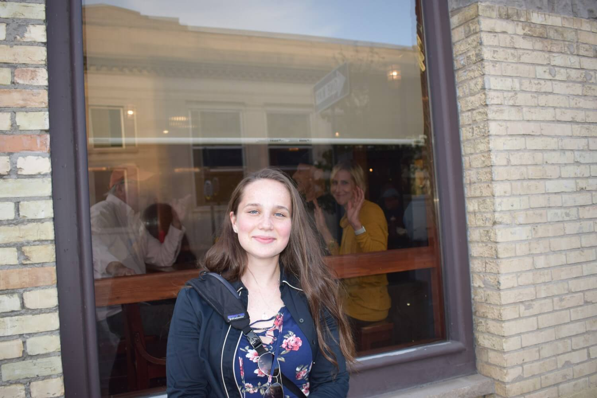
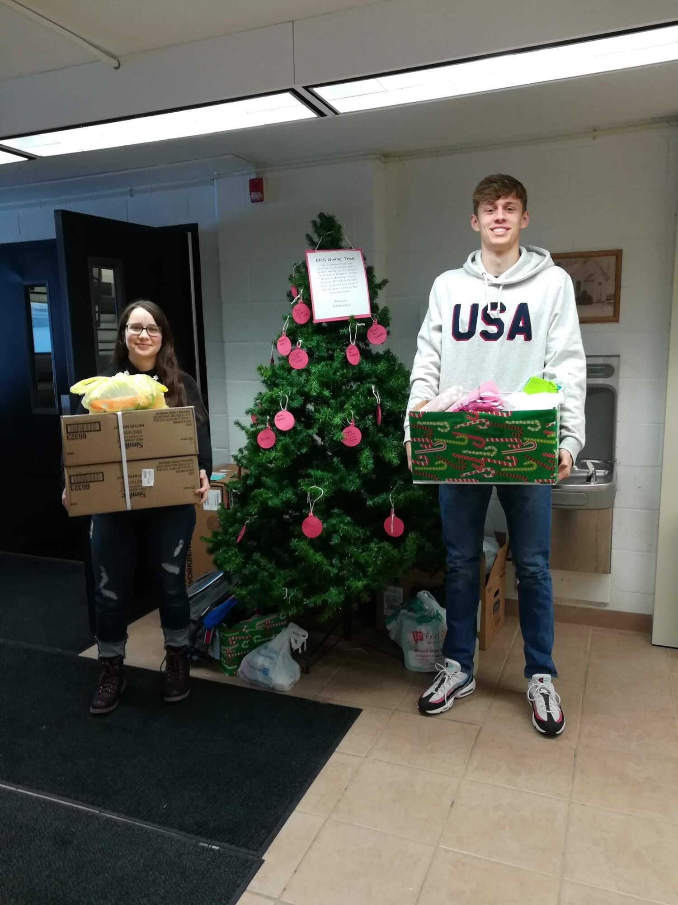
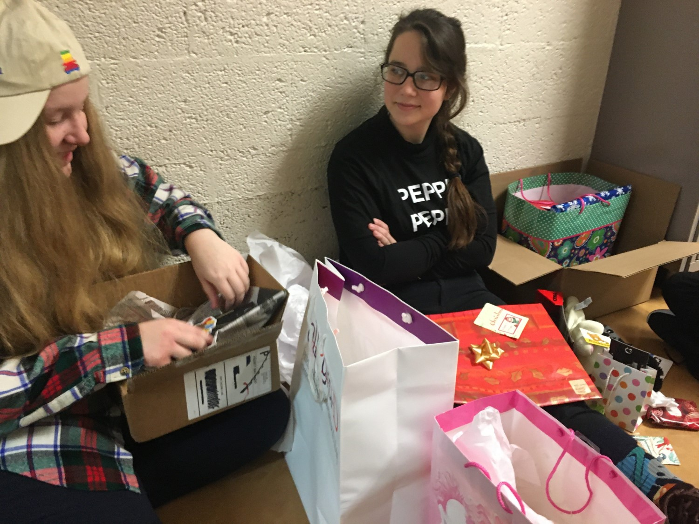

I've created this website to highlight my time in high school. While that phase of my life has come
to an end, I'm onto my next at the University of Michigan.
That's enough said; let's get into it!
~Homecomings~
A small Sadie attending her first high school dance ever, accompanied
by two of her good buddies Ivy (middle) + Sarah (right)!
Fast forward a year and I'm rocking a floral two-piece with my
friend, Josh.
Enough pictures of me in dresses, look at my friends! Taken atop Brooke's (left) stairs,
this is my favorite photo from my senior hoco. Pictured top right in the
green is Maia and Ivy is right beneath her in the purple.
~Halloweens~
Oh dear, this sure is a special one. In Junior year, I had the privilege to go trick-or-treating
with Elsa! Well, actually it was Caleb, but he was just as cool if you catch my drift. I'm pictured on the right
in an oversized Vision costume. And yes, I did attend Cross Country practice with the full
suit on.
Yet another epic Halloween this past year! I got to spend it with Brynn as Eleven from
Stranger Things, Sarah as Killer Croc from Suicide Squad, and Ivy as the Miraculous Ladybug, respectively.
In the same time-line as the photo above, I went as Rey from Star Wars. A huge thank you to Graham for the lightsaber.
~Cross Country (mostly)~
This entire section is what I like to call "It's just a Cross Country thing."
Pictured here is Ruben [XC Coach] collecting phones on our way down to States to ensue
some quality bonding time.
After our last conference race of the 2019 season, we made our way to the grocery store to
carbload on ice cream + pizza.
Taken the same day as the photo above, we squished into our cars and much to our
delight, we devoured the aforementioned goods.
Definitely the most flattering picture of me on here, this was taken mid-race on our
brutal home course.
Same race as pictured above, I placed 17th! Note the 5 Ellsworth girls in the top 20. ;)
During an off-season run through the snow, Robbie (left) is having a grand ol' time, while Bill (middle)
and I are struggling a bit.
Let's switch gears to the other running sport I do, Track & Field, and appreciate
this very wholesome photo of me and my friend, Brooke.
Let's finish this section off with Lilly smirking at a passed out Sadie! Taken by the lovely Brooke
on a bus ride home.
~All the other things~
Here's me on a Washington D.C. trip during my Junior year!
This is the PC I built! She's the rig that I run daily.
Here's another thing I made! This is probably the art piece that I am most proud of; I had to
customize a color wheel with primary and secondary colors. So, I made a pie!
Let's switch gears a bit; here's my old car! I took this photo because as I was walking towards
my vehicle, I had a heart attack that someone had stolen both my stickers + license plate (shh,
I promise I can think properly some of the time.) But anyways, there just happened to be two lil'
Fits right next to each other.

"Sadie! Go stand by that car! You match perfectly!" -Maia
During my second year at Comic Con, Ivy, Sarah, and I are taking a rest
break from our exhausting adventures.
A snapshot of my first ever concert. Located at 21 Monroe Live in Grand Rapids, it was an
incredible line-up of 3 bands I've been known to rock out to: Bad Wolves, Asking Alexandria,
and Papa Roach.
A bangin' selfie with Maia on a day trip to Ocqueoc Falls.
I got the honor of going on a mission trip with new and old friends alike.
Taken in South Dakota on a Cheyenne Reservation.

To follow a tradition, Lilly took a photo of me in front of a brewery's window. Thank you to
the woman who waved back!
Food break! These are some cookies + cupcakes I made.
Here's my brother Paul and I looking ~snazzy~ for a wedding!
Let's change things up a bit! This was a Renaissance Faire that I got the pleasure
of going to; watching live jousting is just as fun as it sounds.
Now, let's head about 600 miles West and cross a few state lines to the great city of
Minneapolis! Taken on a trip with my mom to visit my brother.
600 miles is child's play compared to this: Canada! Lilly took this gorgeous photo on
a fall vacation to our neighboring country.
Alright, the story behind this is I bought a Minecraft body pillow for my friend Caleb
as a Christmas present. I wrapped it end to end and even finished it off with a bow fitting for its size.

Sticking with the Christmas theme, this shows how actually short I am. That's right folks,
I come in at a whopping 5'1"!

Ope! More holidays! This past year, Sarah, Ivy, and I had a present extravaganza at school.
Practically smothered in wrapping paper, we opened our gifts next to my locker.
Taken on an XC ski outing in the UP, I thought this trail sign was too cute not to photograph.
If the amount of snow sedated pictures doesn't prove how long Michigan's winters are,
I'm not sure what will. This is me and group of buds toppling to the ground due to an unstable
group hug.
Here's a little caffeine to warm up after all of those chilly pictures. During high school,
I often went to coffee shops to grind out school work. I took this
on a Thanksgiving trip out to see my family.
Definitely one of the best pictures of me in the books, this was taken by my brother Paul
on a local pier.
Here's me ringing in 2020 with my friends, Hannah and Lilly, though it's definitely
turned out to be a different year than expected.
While Michigan offers some pretty brutal winters, she also offers some equally pretty sunsets. This
was taken on Lake Charlevoix in Boyne City.
This past February I went to a scholarship competition at Michigan State; I was introduced to a niche coffee shop downtown and found this art fascinating
enough to stop for a picture.
While our Robotics season was cut short, we won our first District event!
Here's my second child- second only to my PC of course. She's decorated with all sorts of goodies,
per my relentless sticker addiction.
Cat Tax. This cute lil' fluffer is Ivy's cat, Athena.